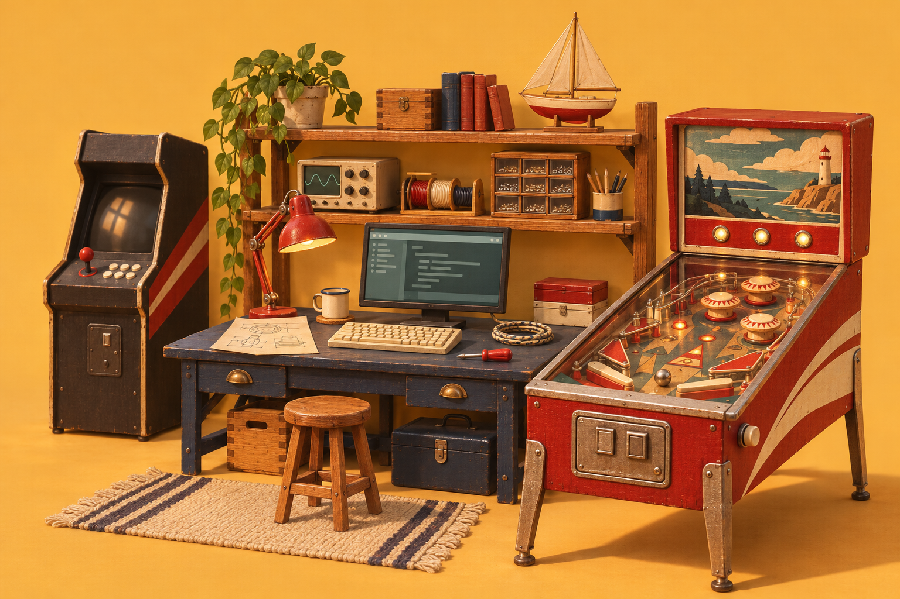
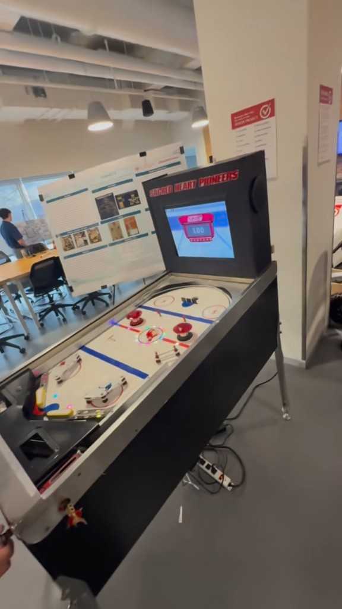

A / PROPOSED FIRST STUDY
The builder’s studio
Curiosity,
made real.
Quintin Vizza ✳Curiosity,
made real.Pinball ↗TCG Shelf ↗
A tactile illustrated welcome. Real projects take center stage as you read.
- Type & materials
- Large humanist sans; warm cream; painted wood, matte enamel, coherent light.
- Identity
- Pinball, arcade and software share one workbench. Nautical mementos are a quiet personal detail.
- Interaction
- Choose a project type, inspect the build, return to the collection. No mandatory intro.
- Cost / risk
- One bespoke hero artwork; needs strong real project imagery. Avoid a generic desk aesthetic.
Generated concept illustration. Does not depict Quintin’s actual workshop or pinball machine.
Open independent implementation →
B / EXPLORATION OPTION
The adventure journal
Quintin’s journalBuilt with curiosity.Workshop chapterPinball / the buildNext chapter →
A personal illustrated travelogue through making, learning and play.
- Type & materials
- Editorial serif with neutral reading text; gouache, ink and warm paper throughout.
- Identity
- Adventure and nautical storytelling; original environments instead of franchise screenshots.
- Interaction
- Vertical chapters with optional illustrated transitions. Mobile uses meaningful scene crops.
- Cost / risk
- Highest art requirement. Needs finished scenes and a consistent art bible before coding.
The geometric scene above is a composition sketch only. It is NOT the proposed final artwork or an acceptable production substitute.
C / EVIDENCE-FIRST OPTION
Playful engineering
Serious builds.
Playful spirit.
Quintin VizzaSerious builds.
Playful spirit.See the engineering ↗
Big type. Real hardware. Color with confidence. A small retro vocabulary.
- Type & materials
- Bold sans, solid color fields, actual photographs and interface captures.
- Identity
- The work itself supplies the playfulness; tiny pixel accents and collectible details.
- Interaction
- One crisp project transition, conventional vertical reading and clear project pages.
- Cost / risk
- Least new art. Needs improved photo crops and a distinctive composition to avoid generic portfolio styling.
Existing project photo. Composition and mobile thumbnail are studies, not final UI screenshots.